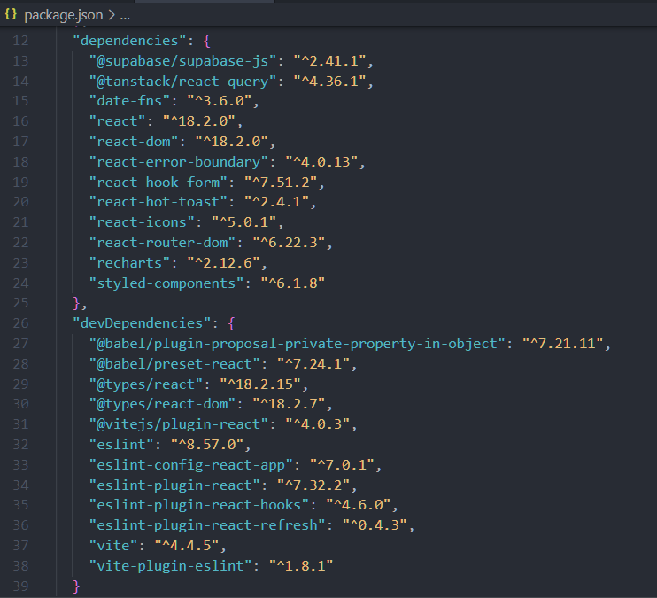
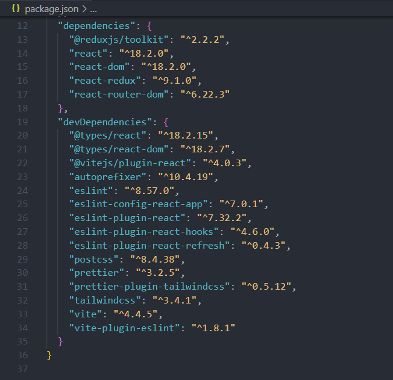
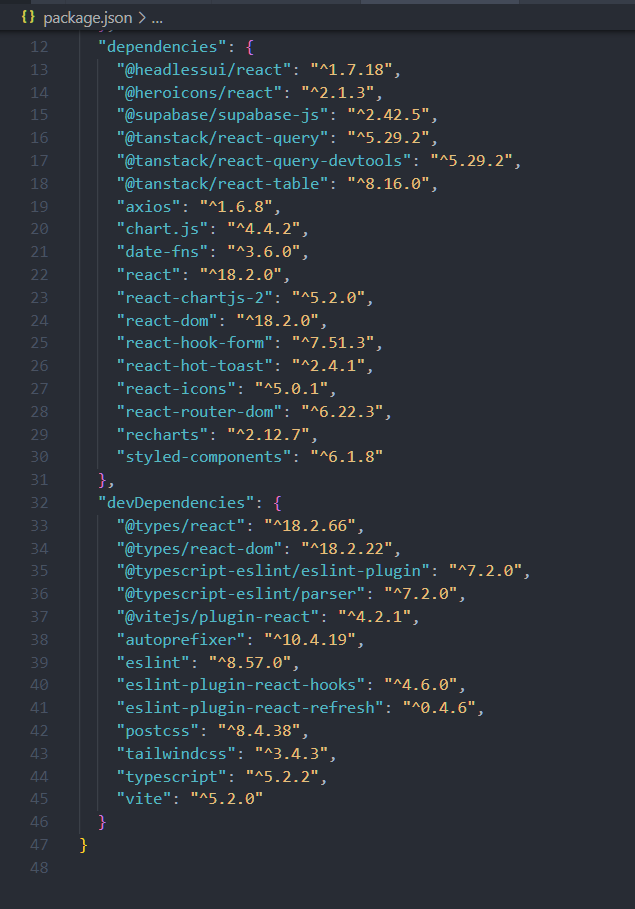
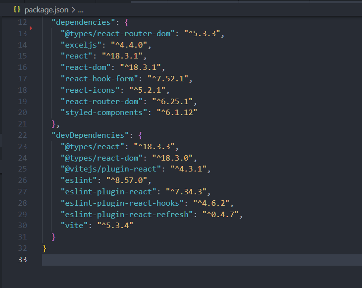

My Portfolio
THE WILD OASIS
This project focused on a hotel guest check-in and check-out solution. We built it as the final major project in my Jonas Schmedtmann React Udemy course. We leveraged technologies such as Tanstack React-Query, Supabase, Recharts, Styled-Component and more. Through this project, I learned how to manage remote state, work with charts, implement user authentication (login and logout), and add dark mode and light mode to a web application using the context API. Below is a screen shot of the dependencies and devDependencies used.
FAST REACT PIZZA CO.
This project focused on a pizza customer order solution, built as part of the Jonas Schmedtmann React Udemy course. We leveraged technologies such as React-Redux, Redux Toolkit, Tailwind CSS, and more. Through this project, I learned how to manage state globally using Redux, allowing components to access and update state efficiently, including how to work with state across different components without directly passing it between parent and child components. Below is a screen shot of the dependencies and devDependencies used.
SNOW
This project is a presentation web app that displays cryptocurrency market movements and the dominance of crypto pairs. It builds upon the skills I developed in the 'Wild Oasis' project and leverages the Coinranking REST API for managing remote state, incorporating similar features. Working on this app helped me solidify concepts that I hadn't fully grasped during the 'Wild Oasis' project. Below is a screenshot of the dependencies and devDependencies used.

CASFOD
This project involved creating a solution to generate an Excel sheet with data collected from a dynamic form, aimed at easing Excel-related workload. I leveraged the ExcelJS library and Blob.js logic to prepare and download the file when the form is submitted. This project helped me practice and enhance my skills in form handling. Below is a screen shot of the dependencies and devDependencies used.
